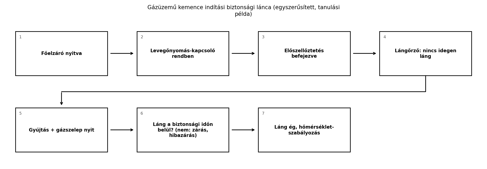

Egy hajnali műszakban a pék megnyomja a kemence indítógombját, de az nem indul el. A kijelzőn hibakód villog: a lángőrző nem érzékelt lángot, ezért a gázszelep zárva maradt. Ha ilyenkor valaki a biztonsági relét áthidalja vagy kézzel tartja nyitva a mágnesszelepet, az égőtér megtelhet gázzal, és a következő gyújtáskor robbanás következhet be. Ez az alfejezet arra tanít, miért léteznek ezek a reteszelések, mi romlik el nélkülük, és hogyan kezeld a kemence égőrendszerét úgy, hogy a termék jó legyen, de a baleset ne következzen be.
A kemence égőrendszere nem egyetlen kapcsoló, hanem egy biztonsági lánc. Képzeld el úgy, mint egy sorba kötött kapcsolókat: ha bármelyik nyitva van, a gáz nem juthat az égőhöz. A lánc tagjai a kézi főelzáró, a nyomáskapcsoló, a szellőztetés reteszelése, a lángőrző, a hőmérséklet-szabályozó és a vészkapcsoló. A pék dolga nem a lánc kiiktatása, hanem annak ellenőrzése, hogy ez a lánc minden indításnál zárul, és hibánál szakszerű segítséget kér.

Az ábrán látható, hogy a gyújtás előtt a gázszelep zárva van, és a lángőrző nem jelezhet lángot. A gázszelep a gyújtással együtt nyit; ha a lángőrző a gyártó által megadott biztonsági időn belül (néhány másodperc, ellenőrizendő: gépkönyv) nem érzékel lángot, a szelep zár, és az automatika hibazárásba kerül. Ezután a gáz csak addig marad nyitva, amíg a lángőrző valóban lángot érzékel. Ez a sorrend a hidegindítási balesetek és a gázrobbanás megelőzésének alapja.
Definíció. A kemence égője az a szerkezeti egység, amely a tüzelőanyagot (gázt vagy fűtőolajat) a levegővel megfelelő arányban összekeveri, meggyújtja, és az égést a tűztérben folyamatosan fenntartja.
Az égő fő részei jellemzően:
A gázégőnél a gáz és a levegő keveredése a fúvókán vagy az égőfejen történik. Az olajégőnél először a fűtőolajat folyékonyból apró cseppekké kell porlasztani, mert a folyékony olaj magában nem ég jól: akkor ég stabilan, ha a felülete kicsi cseppekre növelve érintkezik a levegővel.
Megjegyzés. A pontos szerkezet égőtípusonként és gyártónként eltér. A péknek nem kell gázszerelői vagy égőbeállítói munkát végeznie; a feladata a biztonsági rendszer üzemeltetése, a hibák felismerése és a jelzés.
A felsorolt egységek elhelyezkedését az alábbi sematikus metszet mutatja. A gázégőnél a tüzelőanyag (folytonos nyíl) az elzáró szerven (1), a szűrőn és a nyomásszabályozón (2), majd a kettős mágnesszelepsoron (3: biztonsági és üzemi szelep) át jut az égőfejhez (5), ahol a ventilátor (4) által befújt levegővel (szaggatott nyíl) keveredik. A keveréket a gyújtóelektróda (6) gyújtja meg, a láng jelenlétét a lángőr (7) figyeli, az egészet a vezérlőautomatika (8) felügyeli. Az olajégőnél a szivattyú (9) nagy nyomáson a porlasztófúvókához (10) juttatja az olajat, amely apró cseppekre porlasztja; a lángőr itt jellemzően UV-cella.
A rajzon jól látszik, hogy a gázút a két mágnesszelepen (3) át vezet, és a vezérlő (8) a lángőr (7) jele nélkül nem tarthatja nyitva őket: ezért tilos a lángőrt kikötni vagy áthidalni. A HTML-kiadásban az alkatrészekre mutatva kiemelődnek, és az indítási sorrend (önellenőrzés → előszellőztetés → gyújtás → lángőrzés) lépésenként lejátszható.
Az olajégőknél a porlasztás módja meghatározza, milyen fúvókát, szivattyút és nyomást használnak.
A legfontosabb szakmai következmény: hideg, viszkózus olajjal a porlasztás rossz, az égés kormozó, és el nem égett olajat rak le a tűztérben. Ezért az olajégőnél az olaj előmelegítését és a szűrők állapotát rendszeresen ellenőrizni kell, de a beállítást csak arra feljogosított szakember végezheti.
Szabály. A gázégő biztonsági automatikája felügyeli az indítást, a láng meglétét és a leállítást. Bármely rendellenességnél leállítja az égőt, lezárja a gázszelepet, és hibát jelez.
A gázégő biztonsági automatikájának legfontosabb feladatai:
Figyelem. A biztonsági automatikát, a lángőrzőt, a gáznyomáskapcsolót és a reteszelést soha ne hidaljátok át, ne kössétek le, ne rögzítsétek kézzel vagy szerszámmal. Futó égő mellett a csavarzatok, a gázvezetékek és az elektromos kapcsolók bontása tilos. A beállítást a gázszerelő, az égőszerviz vagy a kijelölt karbantartó végzi.
Definíció. A lángőrző (lángérzékelő) önműködő érzékelő, amely a láng jelenlétét vagy annak megszűnését érzékeli és a biztonsági automatikának elektromos jelet ad. A lángőrző típusa lehet termoelektromos, UV- vagy ionizáció-érzékelő, illetve a régebbi berendezéseknél hőmérséklet-érzékelő.
Szabály. A gáz égőhöz vezető ágában legalább két nyitott-zárt állású automatikus gázszelep (kettős mágnesszelep, biztonsági mágnesszelep) szokásos, úgy, hogy az egyik a biztonsági, a másik a szabályozó funkciót is elláthatja.
A gáztömörség-ellenőrzés a két szelep közötti tér nyomását vizsgálja. Ha a szelep zárásnál ereszt, az automatikus tömörségőrzés hibát jelez. Ezért van az, hogy a kemence leállásakor és indításakor a vezérlés néha várakozik: nem hibás, hanem éppen biztonsági ellenőrző műveletet végez.
Az égőhöz vezető levegő biztosítása szintén reteszelve van:
Ezeket a reteszeléseket a péknek az üzemkezdésnél tudatosan ellenőriznie kell, hogy a kemence ne csapdába essen az első vetésnél. Az üzem előtti próba a gépkönyv szerint történik. A próba során a pék nem nyúl a gázvezetékbe, csak megfigyeli a vezérlés által jelzett hibát, és a rendellenességet haladéktalanul jelent.
Gépbiztonság. A kemence égőterét, az ajtót, a rotációs kocsit és a gőzfejlesztőt a tanuló csak akkor kezelheti, ha betanították, és felügyelet mellett dolgozik.
Figyelem. A forró lemez, a gőzcső, a gőzölés után nyitott ajtó és a tűztér hőmérséklete súlyos égést okozhat. A gőz kibocsátásakor ne állj a gőz útjába, mert a gőz láthatatlan és a bőrt azonnal leforrázza. Az ajtót előbb résnyire, elfordított arccal nyisd, hogy a gőz távozzon; a terméket csak ezután, hőálló kesztyűvel vedd ki.
Tűzvédelem. A gáz- és olajégőknél a leggyakoribb tűzkockázat a szivárgó tüzelőanyag, a kormozódás, az el nem égett olaj, a nem megfelelően karbantartott szűrők és a gyújtóelektródák. Az olajégő tűzterét és az égő alatti csepptálcát rendszeresen tisztítani kell, mert az összegyűlt olaj könnyen gyulladó szennyeződés. A tűzoltó készüléket a kemence közelében jól hozzáférhető helyen, falra szerelve, porral nem takarva, ellenőrzött állapotban kell tartani.
Tilos. Gáz- vagy olajtűz oltása vízzel. A gázlángot vízsugárral oltani tilos, mert a gáz tovább áramolhat és robbanóképes elegyet képezhet. Az olajtüzet vízzel oltani szintén tilos, mert az olaj a víz felszínén szétfröccsen, és a víz gőzzé alakulva az olajat szétrobbanthatja.
Definíció. A szén-monoxid (CO) színtelen, szagtalan, mérgező, éghető gáz, amely tökéletlen égéskor keletkezik, amikor nincs elég levegő, vagy az égő, a huzat, a kémény, az égőtéri szellőzés hibás.
A CO belélegzése az oxigénszállítást gátolja, és nagyobb koncentrációban eszméletvesztést, halált okoz. Az enyhébb tünetek: fejfájás, szédülés, hányinger, gyengeség. A pékségben a CO-mérgezés gyanúja mindig vészhelyzet.
Teendők CO-gyanú esetén:
Megjegyzés. A CO-riasztó használata különösen fontos gáz- vagy szilárd tüzelésű kemencéknél, ahol a kemence égéstermék-elvezetése nem tökéletes. Az érzékelő telepítési helyét, karbantartását és a szén-monoxid-határértéket az üzemeltetői utasítás és a hatályos előírás szerint kell ellenőrizni (ellenőrizendő: gyártói utasítás, hatályos tűzvédelmi és munkavédelmi előírás).
Szabály. Gázszag esetén a területen tilos nyílt lángot használni, villanykapcsolót, csengőt, dugaszt, elektromos berendezést működtetni, mert a kapcsoláskor szikra keletkezhet, és a gáz-levegő keverék berobbanhat.
A helyes teendők:
A gázszag észlelésére a pékségben a szaglás is alkalmas, de a földgáz szagtalan; a gázszolgáltató illatosítóanyagot adagol, hogy az ember érezze a szagát (ellenőrizendő a helyi gázszolgáltató adata). A riasztó és a kézi gázkoncentráció-érzékelő nem helyettesíti a rendszeres karbantartást.
Az olajégő üzeme is veszélyes, bár a gázénál kevésbé látványos. Az olajtüzelésnél:
A fűtőolaj és a tüzelőanyag nem élelmiszer. A kemence égésterétől, a gőztértől és a termék útjától elkülönítetten, jelölt edényben kell tárolni. Az olaj kiömlése esetén a termékgyártást abban a térben fel kell függeszteni, a termékeket el kell szigetelni, és az olajmentes takarítást kell biztosítani.
Egy gázüzemű szakaszos kemence indítási folyamata tanulási példaként így nézhet ki:
| Lépés | Paraméter (tanulási példa) | Ellenőrzés |
|---|---|---|
| Előszellőztetés | 30–90 s | A vezérlés kijelzi, hogy a ventilátor jár, a levegőnyomás-jelző aktív |
| Gáz-csatlakozási nyomás | a gépkönyv szerinti sáv (hazai kisnyomású hálózatban jellemzően 25 mbar = 2,5 kPa körül, ellenőrizendő: gázszolgáltató, gépkönyv) | Nyomásmérő a megadott sávban |
| Lángőrzés | lángjelzés aktív | A lángőrző ikon vagy jelzőfény |
| Sütőtér-hőmérséklet | 230–260 °C a kenyérsütéshez (termékfüggő) | Beépített hőmérő |
| Leállítás | gáz zár → ventilátor járat → főelzáró zár | Gáznyomás nulla, ventilátor leállt |
Ezek a számok nem hatósági vagy gyártói előírások; a mindenkori gépkönyv és a kemence technológiai lapja az irányadó (ellenőrizendő: gyártói adatlap).
Előírás. A gáz- és olajtüzelésű berendezéseket az érvényes műszaki biztonsági és tűzvédelmi előírások szerint időszakosan ellenőriztetni kell, a rendszeres karbantartást a gyártó és a hatósági előírások szerint kell végezni (ellenőrizendő: a hatályos magyar gázszerelői és tüzeléstechnikai műszaki biztonsági szabályzat, valamint a kemence üzembehelyezési és karbantartási dokumentációja). Az égő és biztonsági automatika beállítását, javítását és a gázvezeték-szerelést kizárólag arra jogosult szakember végezheti (ellenőrizendő: a vonatkozó gázipari engedélyezési és munkavégzési szabály). A pék feladata a rendeltetésszerű üzemeltetés, a napi szemle és a hibajelzés.
Egy pékségben a hajnali műszak kezdete előtt a pék gázszagot érzett a kemence közelében. Azt gondolta, csak a sütőtérből maradt vissza a tegnapi illat, és megnyomta a villanykapcsolót. Nem történt baj, mert nem volt robbanóképes koncentráció, de a műszakvezető azonnal leállította a csarnokot, és a gázszerelő tömítetlen kötést talált. A tanulság: gázszag esetén mindig a biztonsági szabályt kell követni, nem a saját tapasztalatot, és villanykapcsolót sem használhatsz, amíg a területet ki nem szellőztették és a szivárgást meg nem szüntették.
Egy másik hibás gyakorlatnál a dolgozó az égő indításakor többször egymás után nyomta a gyújtást, mert az égő nem indult. A vezérlés hibazárásba került, és a dolgozó a szerelő segítségkéréséig nem tudta a kemencét üzemeltetni. A helyes gyakorlat: az indítási kísérletet a gépkönyv szerinti várakozási idő után, a hiba okának ellenőrzése után szabad megismételni, vagy a műszakvezetőt, a szerelőt kell hívni.
Cél: A kemence biztonságos felfűtése és leállítása a termék sütéséhez.
Eszközök és anyagok: gépkönyv, üzemi utasítás, hőálló kesztyű, zárható cipő, tiszta munkaruha, hajháló, az égő biztonsági jelzéseinek megfigyeléséhez jegyzetfüzet.
Higiénia. A kemence közelében tiszta munkaruha, hajháló, kézmosás után, ékszer nélkül dolgozz. A gőzöléshez használt kéziszerszámokat csak a megengedett, tiszta helyre tedd le. A kemence mellett nem fogyaszthatsz ételt, italt, és nem tárolhatsz élelmiszert.
Gépbiztonság. A gáz- és olajégőt csak betanítás után, felügyelettel kezeld. Védőburkolat nélkül, leszerelt retesz mellett gépet üzembe helyezni tilos. A lángőrzőt, gázszelepet, nyomáskapcsolót nem szerelheted, nem állíthatod, nem hidalhatod át. Ha a kemence hibát jelez, a beavatkozást csak szakember végezheti.
A gyakorlat lépései:
| Lépés | Ellenőrzési pont | Megfelelőség jele |
|---|---|---|
| 1. Üzem előtti szemle | Vészkapcsoló, ajtók, tűztér, szellőzés | Rendben |
| 2. Gázfőelzáró | Nyitás az utasítás szerint | Nyitva |
| 3. Gép főkapcsoló | Nincs sérülés, jelzőfény | Üzemkész |
| 4. Előszellőztetés | Vezérlő kijelzése | Lezajlott |
| 5. Gyújtás | Láng a biztonsági időn belül | Lángjelzés |
| 6. Sütőtér hőmérséklet | Beállított érték elérése | Vethető |
| 7. Leállítás | Gázszelep zár, ventilátor járat | Hűlés |
A sorrend tanulási példa; a konkrét lépéseket az üzemi gépkönyv szabja meg (ellenőrizendő: az üzemelő kemence gépkönyve és a helyi tűzvédelmi utasítás).
A kemence égőjének műszaki ellenőrzése a termék minőségét is érinti. A hibás égő, a rossz légfelesleg, a kormozódó láng, a nem egyenletes tűztéri hőmérséklet a héj túl sötét, foltos, vagy a bélzet nyers, ragacsos, szakadt sütési hibáját okozza. Az üzem közbeni ellenőrző jelek, amelyekre a pék figyeljen:
A vészkapcsoló benyomva marad. Tünet: a kemence nem indul, pedig a főkapcsoló és a gáznyomás rendben. Ok: a vészkapcsolót előző műszakban benyomták, de a gépfőkapcsolóval együtt nem oldották ki. Helyes gyakorlat: az üzemkezdésnél a vészleállító állapotát is a szemle része ellenőrizni, és a hibát a műszakvezetőnek jelezni, nem pedig erőltetni az indítást.
A gázszelep előtti szűrőt házilag „kitakarítják”. Tünet: gázszag, nyomásingadozás. Ok: nem szakszerű beavatkozás, tömítés-meghibásodás. Helyes gyakorlat: a gázvezetéket csak gázszerelő bonthatja; a pék a szivárgás gyanúját zárással, szellőztetéssel és értesítéssel kezeli.
Olajégőnél a csepptálcát nem ürítik, és az olaj a forró tűztér alatt összegyűlik. Tünet: csúszásveszély, égési tűzkockázat, kellemetlen szag. Ok: a napi takarítás elmaradása. Helyes gyakorlat: a tűztér alatti tálcát a tisztítási terv szerint, leállított, kihűlt égőnél kell megtisztítani, az olajat veszélyes vagy éghető hulladékként kezelni.
Gázszag esetén a dolgozó felkapcsolja a villanyt. Tünet: robbanásveszély. Ok: a gáz-levegő keverék robbanóképes lehet, és a kapcsoló szikrát adhat. Helyes gyakorlat: a villanykapcsolót, dugaszt, csengőt, telefont az érintett térben tilos működtetni; a főelzárót az utasítás szerint elzárni, szellőztetni, az épületet elhagyni, a szolgáltatót, vezetőt értesíteni.
1. feladat (A) Sorold fel a gázégő szerkezeti egységeit, és írd le, mi a lángőrző feladata.
2. feladat (A) Írd le, miért kell az indításnál előszellőztetni a tűzteret, mielőtt a gázszelep kinyit.
3. feladat (B) Mennyi idő telik el az indítógomb megnyomásától a láng megjelenéséig, ha az előszellőztetés 45 s, a gyújtási szakasz 10 s, és a vezérlés indulás előtt 30 s önellenőrzést végez? Mi történik, ha a láng a biztonsági időn belül nem jelenik meg?
4. feladat (B) Rajzold le szavakkal a gázüzemű kemence biztonsági indítási folyamatát, és jelöld meg, hol van a kritikus veszély, ha a lángőrzőt kikötik.
5. feladat (C) Egy pékségben a pék gázszagot érzett, de nem szólt, hanem kinyitotta a kemence ajtaját, hogy a sütőtér gázát „kiszellőztesse”. Mi a hiba ebben a gondolkodásban, és mi a helyes teendő?
6. feladat (D) A kemence CO-riasztója jelez. A dolgozó elégedetlen, mert a termékek éppen sülnének. Mit kell tennie, és milyen sorrendben?
Önellenőrzés – válaszok
1. feladat (A) A gázégő fő részei: gázbemenet, szabályozó- és biztonsági szelepek, ventilátor és légterelő, gyújtóelektróda, lángőrző, égőfej, vezérlőegység. A lángőrző a láng jelenlétét vagy megszűnését érzékeli, és a biztonsági automatikának jelet ad; feladata, hogy lángkimaradásnál a gázszelep zárjon, és az égő reteszelje az újraindítást.
2. feladat (A) Az előszellőztetés a tűzteret friss levegővel öblíti át, hogy a berobbantás előtt a korábban visszamaradt gáz- vagy olajgőz-elegyet eltávolítsa. Ha a gázszelep előszellőztetés nélkül nyitna, a tűztérben felgyűlt gáz-levegő keverék a gyújtáskor robbanhat.
3. feladat (B) Az önellenőrzés, az előszellőztetés és a gyújtási szakasz egymás után zajlik, ezért az idő:
Ha a láng a biztonsági időn belül nem jelenik meg, a gázszelep zár, a vezérlés hibazárásba kerül; a pék nem próbálkozik újra, hanem jelez a vezetőnek és a szakembernek (a gépkönyv szerinti, gyártó által engedélyezett automatikus újrapróbálkozást a gépkönyv írja elő; ellenőrizendő: gépkönyv).
4. feladat (B) A folyamat: főelzáró nyitása, a gépkönyvi előszellőztetés, a levegőnyomás retesz ellenőrzése, az idegenfény-ellenőrzés, a gyújtás és a gázszelep nyitása, a láng megjelenése a biztonsági időn belül (különben zárás és hibazárás), a láng folyamatos égésének fenntartása, hőmérséklet-szabályozás. A kritikus pont a gázszelep nyitása és a lángőrző visszajelzése közötti biztonsági idő. Ha a lángőrzőt kikötik, a vezérlés nem érzékeli a láng kialvását, így a gázszelep nyitva maradhat, és a tűztér megtelhet gázzal. Ez robbanásveszélyt és súlyos balesetet okozhat.
5. feladat (C) A hiba: a pék maga próbálja „kiszellőztetni” a tűzteret, miközben a gázszivárgás helye ismeretlen, és a kemence ajtajának nyitása, a villanykapcsoló használata, a szerszámokkal való benyúlás szikrát adhat. A helyes teendő: villanyt ne kapcsoljon, nyílt lángot ne használjon, a gáz főelzáróját zárja, az ajtókat, ablakokat szellőzés céljából nyissa ki, a területet hagyja el, és a gázszolgáltatót, a műszakvezetőt, szükség esetén a tűzoltóságot értesítse.
6. feladat (D) A CO-riasztó jelzésekor: 1. ne nyomja el a hangot, ne kapcsolja ki; 2. szellőztesse a helyiséget, az ajtókat, ablakokat nyissa; 3. a kemencét és az égőt az utasítás szerint állítsa le, a gázt zárja; 4. a munkatársakat vezesse friss levegőre, rosszullétnél mentőt hív; 5. értesítse a műszakvezetőt, a karbantartót; 6. a készüléket csak az ok megszüntetése után, a szakember szerint szabad visszakapcsolni. A termék süthetősége másodlagos az életveszélyes CO-mérgezés megelőzéséhez képest.
A gáz- és olajégős kemence üzemeltetése a pék munkájának kiemelt biztonsági területe. A gázégő biztonsági automatikája felügyeli az indítási sorrendet: előszellőztetés, gyújtás és gázszelep-nyitás, lángőrzés a biztonsági időn belül, valamint hibazárás és reteszelt leállítás. A lángőrző a láng jelenlétét érzékeli, és lángkimaradásnál azonnal zárja a gázszelepet. A gázszelep, a levegőnyomás-kapcsoló, az ajtóreteszelés és a vészkapcsoló biztonsági láncot alkot; ezeket áthidalni, befolyásolni vagy kikötni tilos. A szellőztetés, a CO-riasztó és a gázérzékelő a mérgezési és robbanásveszélyt mérsékli. Gázszag esetén villanyt, nyílt lángot tilos használni; a főelzárót zárni kell, a területet szellőztetni, az épületet elhagyni, és a szolgáltatót, a vezetőt értesíteni. Az olajégőnél a porlasztás, az olajszűrő, a csepptálca és a szivárgásmentes tárolás ugyanilyen komoly kockázat. A pék nem végez gázszerelői, égőbeállítói vagy villamos munkát, csak a napi szemlét, a biztonsági rendszer üzemeltetését és a hibajelzést. Ezek az ismeretek a Kemencefelfűtés, vetés, sütési sorrend és gőzölés alfejezetben hasznosulnak, ahol a biztonságosan felfűtött kemencébe vetéssel, gőzöléssel és a sütési paraméterek ellenőrzésével dolgozunk tovább.